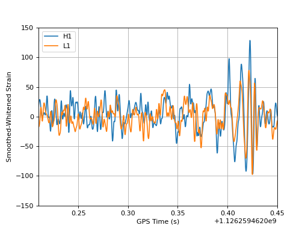
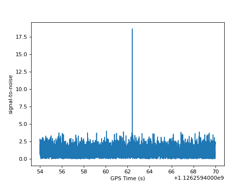

Signal Processing with GW150914¶
Here are some interesting examples of how to process LIGO data using GW150914 as an example.
Plotting the whitened strain¶
from pycbc.frame import read_frame
from pycbc.filter import highpass_fir, lowpass_fir
from pycbc.waveform import get_fd_waveform
from pycbc.psd import welch, interpolate
from pycbc.catalog import Merger
import pylab
for ifo in ['H1', 'L1']:
# Read data and remove low frequency content
h1 = Merger("GW150914").strain(ifo)
h1 = highpass_fir(h1, 15, 8)
# Calculate the noise spectrum
psd = interpolate(welch(h1), 1.0 / h1.duration)
# whiten
white_strain = (h1.to_frequencyseries() / psd ** 0.5).to_timeseries()
# remove some of the high and low
smooth = highpass_fir(white_strain, 35, 8)
smooth = lowpass_fir(white_strain, 300, 8)
# time shift and flip L1
if ifo == 'L1':
smooth *= -1
smooth.roll(int(.007 / smooth.delta_t))
pylab.plot(smooth.sample_times, smooth, label=ifo)
pylab.legend()
pylab.xlim(1126259462.21, 1126259462.45)
pylab.ylim(-150, 150)
pylab.ylabel('Smoothed-Whitened Strain')
pylab.grid()
pylab.xlabel('GPS Time (s)')
pylab.show()
(Source code, png, hires.png, pdf)
{kind=link}
{kind=link}

Calculate the signal-to-noise¶
from pycbc.frame import read_frame
from pycbc.filter import highpass_fir, matched_filter
from pycbc.waveform import get_fd_waveform
from pycbc.psd import welch, interpolate
try:
from urllib.request import urlretrieve
except ImportError: # python < 3
from urllib import urlretrieve
# Read data and remove low frequency content
fname = 'H-H1_LOSC_4_V2-1126259446-32.gwf'
url = "https://www.gw-openscience.org/GW150914data/" + fname
urlretrieve(url, filename=fname)
h1 = read_frame('H-H1_LOSC_4_V2-1126259446-32.gwf', 'H1:LOSC-STRAIN')
h1 = highpass_fir(h1, 15, 8)
# Calculate the noise spectrum
psd = interpolate(welch(h1), 1.0 / h1.duration)
# Generate a template to filter with
hp, hc = get_fd_waveform(approximant="IMRPhenomD", mass1=40, mass2=32,
f_lower=20, delta_f=1.0/h1.duration)
hp.resize(len(h1) // 2 + 1)
# Calculate the complex (two-phase SNR)
snr = matched_filter(hp, h1, psd=psd, low_frequency_cutoff=20.0)
# Remove regions corrupted by filter wraparound
snr = snr[len(snr) // 4: len(snr) * 3 // 4]
import pylab
pylab.plot(snr.sample_times, abs(snr))
pylab.ylabel('signal-to-noise')
pylab.xlabel('GPS Time (s)')
pylab.show()
(Source code, png, hires.png, pdf)
{kind=link}
{kind=link}

Listen to GW150914 in Hanford¶
Here we’ll make a frequency shifted and slowed version of GW150914 as it can be heard in the Hanford data.
from pycbc.frame import read_frame
from pycbc.filter import highpass_fir, lowpass_fir
from pycbc.psd import welch, interpolate
from pycbc.types import TimeSeries
try:
from urllib.request import urlretrieve
except ImportError: # python < 3
from urllib import urlretrieve
# Read data and remove low frequency content
fname = 'H-H1_LOSC_4_V2-1126259446-32.gwf'
url = "https://www.gw-openscience.org/GW150914data/" + fname
urlretrieve(url, filename=fname)
h1 = highpass_fir(read_frame(fname, 'H1:LOSC-STRAIN'), 15.0, 8)
# Calculate the noise spectrum and whiten
psd = interpolate(welch(h1), 1.0 / 32)
white_strain = (h1.to_frequencyseries() / psd ** 0.5 * psd.delta_f).to_timeseries()
# remove some of the high and low frequencies
smooth = highpass_fir(white_strain, 25, 8)
smooth = lowpass_fir(white_strain, 250, 8)
#strech out and shift the frequency upwards to aid human hearing
fdata = smooth.to_frequencyseries()
fdata.roll(int(1200 / fdata.delta_f))
smooth = TimeSeries(fdata.to_timeseries(), delta_t=1.0/1024)
#Take slice around signal
smooth = smooth[len(smooth)/2 - 1500:len(smooth)/2 + 3000]
smooth.save_to_wav('gw150914_h1_chirp.wav')
Note, google chrome may not play wav files correctly, please download to listen.